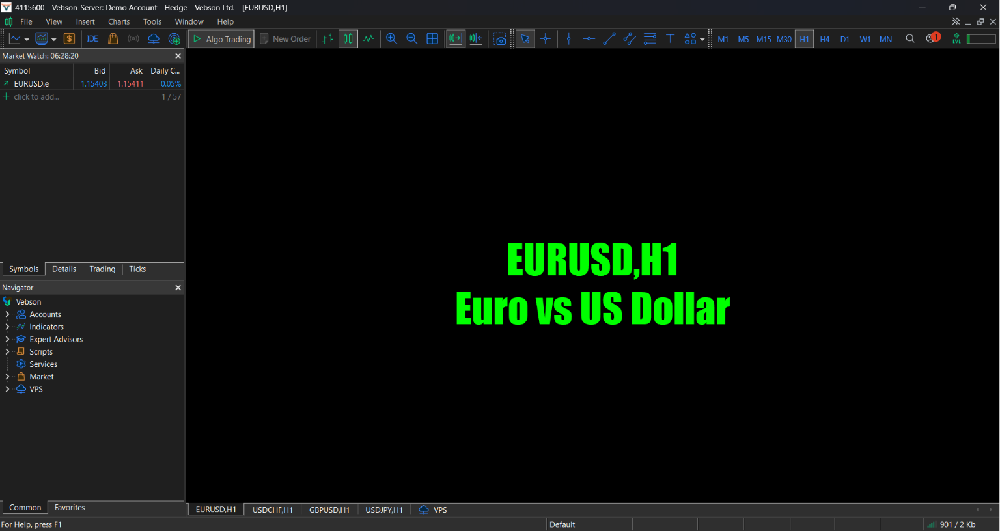

Back to Portfolio
View Image
Open PDF Certificate
View Offer Letter
View Project Specs
Financial Certifications & Credentials
Verifiable industry track records, achievements, and documentation
Market Analytics Validation
Certified proficiency in technical chart mapping, liquidity flows, and core asset metrics.
Advanced Capital Markets Credential
Advanced documentation covering risk evaluation parameters, exchange data streams, and structural execution maps.
Professional Offer Letter
Official selection and technical placement verification document for corporate operations.

FX Daily Analytics Dashboard
Practical development metrics used to monitor financial cross-asset trend vectors and daily charts.